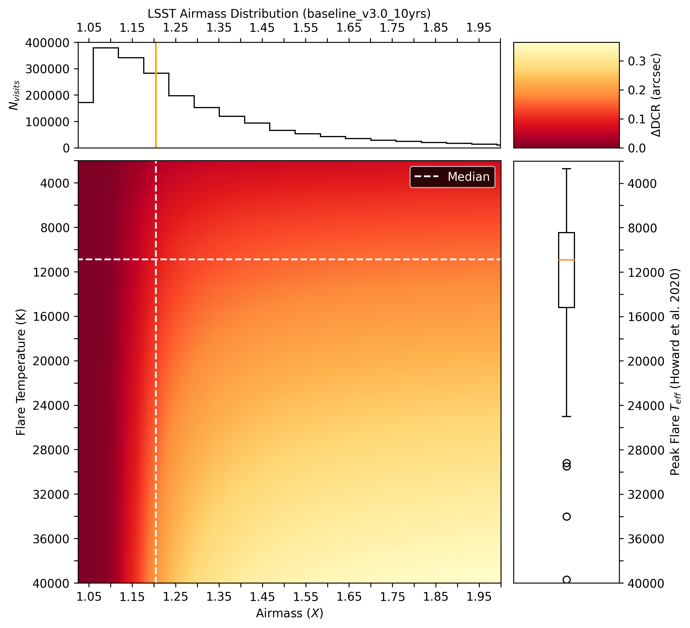
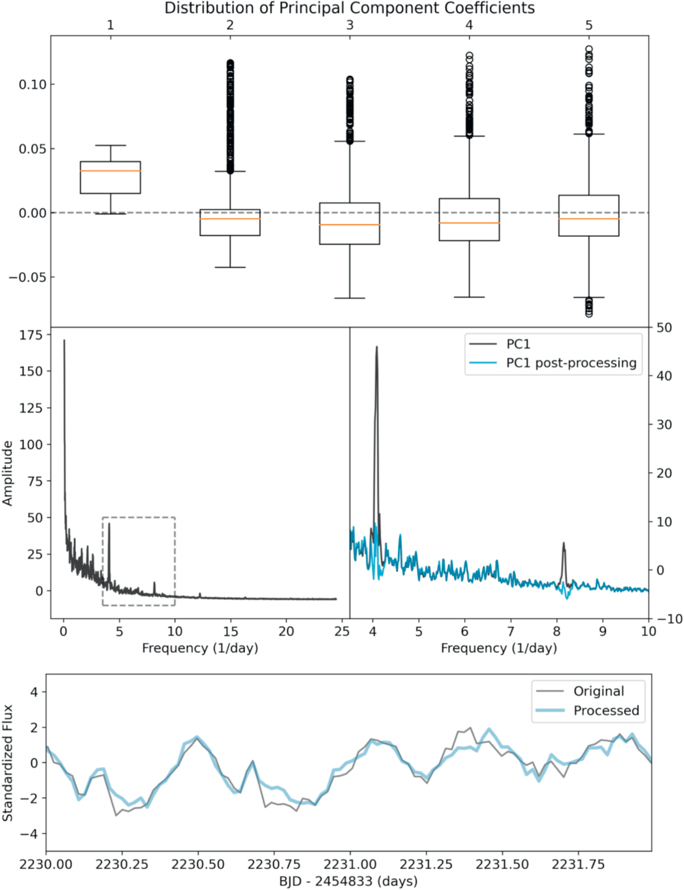

My Publications
First Author Publications
Every Datapoint Counts: Stellar Flares as a Case Study of Atmosphere-Aided Studies of Transients in the Rubin LSST Era
Due to their short timescale, stellar flares are a challenging target for the most modern synoptic sky surveys. The upcoming Vera C. Rubin Legacy Survey of Space and Time (LSST), a project designed to collect more data than any precursor survey, is unlikely to detect flares with more than one data point in its main survey. We developed a methodology to enable LSST studies of stellar flares, with a focus on flare temperature and temperature evolution, which remain poorly constrained compared to flare morphology. By leveraging the sensitivity expected from the Rubin system, differential chromatic refraction (DCR) can be used to constrain flare temperature from a single-epoch detection, which will enable statistical studies of flare temperatures and constrain models of the physical processes behind flare emission using the unprecedentedly high volume of data produced by Rubin over the 10 yr LSST. We model the refraction effect as a function of the atmospheric column density, photometric filter, and temperature of the flare, and show that flare temperatures at or above ∼4000 K can be constrained by a single g-band observation at air mass X ≳ 1.2, given the minimum specified requirement on the single-visit relative astrometric accuracy of LSST, and that a surprisingly large number of LSST observations are in fact likely be conducted at X ≳ 1.2, in spite of image quality requirements pushing the survey to preferentially low X. Having failed to measure flare DCR in LSST precursor surveys, we make recommendations on survey design and data products that enable these studies in LSST and other future surveys.
Figure 13. Center: ΔDCR induced as a function of flare temperature and air mass in LSST g band. Right: box-and-whiskers plot of peak effective flare temperatures measured by Howard et al. (2020). Top: histogram of the per-visit air mass in the current LSST baseline observing strategy (baseline_v3.0_10yrs; The Rubin Observatory Survey Cadence Optimization Committee 2023). The median air mass and temperature are indicated by orange lines.
Detection and Removal of Periodic Noise in Kepler/K2 Photometry with Principal Component Analysis
We present a novel method for detrending systematic noise from time series data using Principal Component Analysis (PCA) in Fast Fourier Transforms. This method is demonstrated on time series data obtained from the inaugural campaign of the Kepler K2 mission, as well as three objects of interest from Campaign 4. Unlike previous detrending techniques that utilize PCA, this method performs the detrending in Fourier space rather than temporal space. The advantage of performing the analysis in frequency space is that the technique is sensitive purely to the periodicity of the unwanted signal and not to its morphological characteristics. This method could improve measurements of low signal-to-noise photometric features by reducing systematics. We also discuss challenges and limitations associated with this technique.
Figure 1. Top: box-and-whisker plots of the coefficients of the PCs of the power spectra of 1000 K2 Campaign 4 lightcurves. Each box represents the interquartile range of the distribution of PC coefficients for PC-1 through PC-5, as indicated the orange line represents the median value, the whiskers the edges of the distribution, and points are "outliers." The distribution of PC-1 is entirely positive and compact, indicating that PC-1 plays an important part in the reconstruction of all PS, suggesting it contains systematics. Middle Left: PC-1: a sharp peak at a frequency of 4.09 days−1 (6.06 hr) is present, as is its first harmonic (7.88 days−1). Middle Right: zoom-in on the region boxed in the left panel: PC-1 before (black) and after (blue) reconstruction using the FFT-PCA algorithm. We note that some parameters including the width of the Gaussian filter and the threshold for selecting DFT components to modify are determined empirically (set by eye for this proof of concept) and will vary based on the characteristics of the data. Bottom: Excerpt of a lightcurve with high PC-1 coefficients pre- and post-processing.
Flares on Wide Binary Stars
We present an analysis of flare activity in wide binary stars using a combination of value-added data sets from the NASA Kepler mission. The target list contains a set of previously discovered wide binary star systems identified by proper motions in the Kepler field. We cross-matched these systems with estimates of flare activity for ∼200,000 stars in the Kepler field, allowing us to compare relative flare luminosity between stars in coeval binaries. From a sample of 184 previously known wide binaries in the Kepler field, we find 58 with detectable flare activity in at least 1 component, 33 of which are similar in mass (q > 0.8). Of these 33 equal-mass binaries, the majority display similar (±1 dex) flare luminosity between both stars, as expected for stars of equal mass and age. However, we find two equal-mass pairs where the secondary (lower mass) star is more active than its counterpart, and two equal-mass pairs where the primary star is more active. The stellar rotation periods are also anomalously fast for stars with elevated flare activity. Pairs with discrepant rotation and activity qualitatively seem to have lower mass ratios. These outliers may be due to tidal spin-up, indicating these wide binaries could be hierarchical triple systems. We additionally present high-resolution adaptive optics images for two wide binary systems to test this hypothesis. The demographics of stellar rotation and magnetic activity between stars in wide binaries may be useful indicators for discerning the formation scenarios of these systems.

Figure 3. Component-wise comparison for 58 wide binaries with detected flare activity. The central blue line is the expected relationship for equal-mass coeval components. The area between the yellow lines contains pairs whose difference in flare luminosity may plausibly be explained by a solar-like activity cycle. The green region contains pairs where the secondary star is significantly more active, while the blue region contains pairs where the primary is more active. The red region denotes the minimum flare detection threshold, below which flare signals are indistinguishable from noise. Circled points are pairs with q ≥ 0.8, and uncircled points are pairs with q < 0.8.